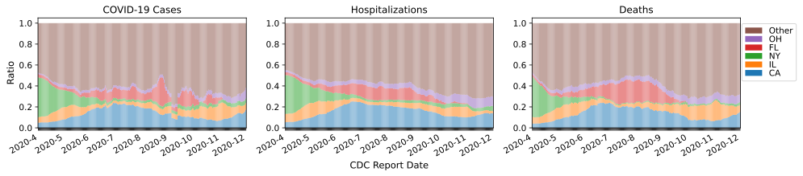

HFR Estimation using Block-Bootstrap and Cubic Splines.
Algorithm Walkthrough:
Fit a cubic smoothing spline \(S(t)\) to the 7-day lagged average HFRs, where the HFR for day
\(t \in \{1, ..., T\}\) is denoted \(HFR_t\).
This provides an estimate of the trend.
Now we would like confidence intervals around this trend.
``Pre-whiten" the data by taking the residuals of the cubic spline \(r_t = \{S(t) - HFR_t\}\), where \(t \in \{1, 2, ..., T\}\).
Among the series of residuals \(\{r_1, r_2, ..., r_T\}\),
use a moving block-bootstrap (MBB)
with block size \(B = 7\) days in order
to resample \(N = 1000\) replicates of length \(T\).
The MBB splits the series into \(T - B + 1\)
overlapping blocks of length \(B\),
and draws \(T/B\) blocks at random with replacement.
Concatenating these blocks in the order they are drawn
yields a new series of residuals
\(r'^{(i)} = \{r'^{(i)}_1, r'^{(i)}_2, ..., r'^{(i)}_T\}\),
where \(i \in \{1, 2, ..., N\}\)
(since this step is repeated \(N\) times to create \(N\) replicates).
``Post-blacken" each of the residual replicates
by adding it back onto the estimated trend \(S(t)\) in step 1.
This gives us new HFR trajectories
\(HFR'^{(i)} = \{S(1) + r'^{(i)}_1, S(2) + r'^{(i)}_2, ..., S(T) + r'^{(i)}_T\}\),
where \(i \in \{1, 2, ..., N\}\),
drawn from the original data distribution
(assuming exchangeable blocks of residuals).
Re-estimate the trend for each of the trajectories
\(HFR'^{(i)}\) using a cubic smoothing spline
\(S'^{(i)}(t)\), \(i \in \{1, 2, ..., N\}\).
Equipped with these fitted splines
\(\{S'^{(1)}(t), S'^{(2)}(t), ..., S'^{(N)}(t)\}\)
from block-bootstrapping the residuals and post-blackening,
we can now estimate the trend and \(95\%\) confidence intervals
for any time \(t \in \{1, 2, ..., T\}\).
Estimate of trend and uncertainty in age-stratified HFRs:
While we focus on the two peaks and
the endpoints of the study time range,
we can easily read off similar estimates
with uncertainty for all dates between
April 1st and December 1st (Fig.1).
Overall, the cubic smoothing splines
appear to fit the 7-day lagged average HFRs relatively well.
Consistent with our point estimates,
the overall HFR in Florida appears relatively flat
until August, in which the HFR decreases
greatly across all age groups
(Fig.1a).
In the national data, there appears to be
an almost monotonic decline in HFR
across all age groups for the entire time range,
with the decrease slowing down in August,
but slightly picking up again in December
(Fig.1b).
Fig.1a - Florida FDOH Data.Fig.1b - United States CDC Data.
Fig.1 - Estimate of trend and uncertainty in age-stratified HFRs, derived using residual block-bootstrapping with cubic splines and post-blackening. Solid line corresponds to the age-stratified estimate, shaded region corresponds to the uncertainty around the estimate, and dotted line shows the original 7-day lagged HFR.
State-wise distribution
Between April 1st and April 15th, \(34.5\%\) of national CDC cases were recorded in New York alone.
Over the next three monthes, cases in New York had diminished and were starting to surge in other states.

Fig.2 - State-wise distribution of cases,
(eventual) hospitalizations,
and (eventual) deaths for top five states FL, NY, CA, GA and NC (and the rest) with most COVID-19 cases from United States CDC data, by date of report to the CDC (U.S.)